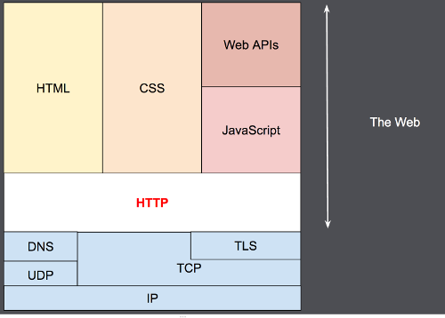
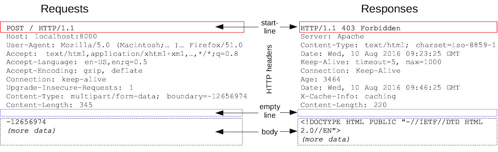
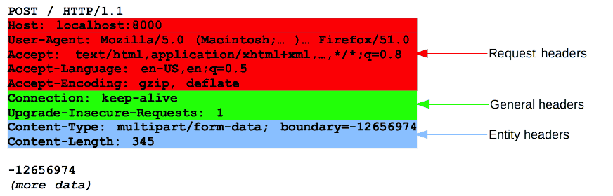

HTTP 是基于 TCP/IP 协议而建立 Web 基础协议，从 1989 年早期的简单 HTTP/0.9 单行协议开始，至 1996 年逐步扩展了状态码、协议头等特性发展到 HTTP/1.0，然后在 1997 年的 HTTP/1.1 增加了 TCP 连接复用、流水线支持、响应分块、缓存控制、内容协商等特性。2015 年 HTTP/2 协议正式标准化之后，传统 HTTP 的文本协议被二进制协议替代，让并行的请求在同 1 个 TCP 连接中处理，并移除了header中的重复数据，大幅提升通信效率。

在各类现代化 Web 服务器与开发框架群雄并起的年代，无论是 Python 的Django、Tornado，还是 Java 的Servlet或者是 Go 上的BeeGo，其本质上都是基于HTTP 协议的封装。因此了解 HTTP 相关协议规范能够提升 Web 开发的透明度，能够从协议角度理解 Web 报文的通信过程，而非仅仅从各类 Web 开发框架及其 API 封装的角度。
概览
HTTP（HyperText Transfer Protocol）是一种能够获取各类网络资源（HTML 文本、CSS 布局描述、JavaScript 脚本、图片和音视频多媒体）的通讯协议，是 Web 数据交换的基础。HTTP 设计于 20 世纪 90 年代初，是一种可扩展的协议，也是应用层的协议，通过 TCP 或者 TLS 加密的 TCP 连接进行通信。

HTTP协议属于应用层，TCP协议属于传输层；DNS也是一种应用层协议，但是同时使用到了 UDP 和 TCP 两种传输层协议；TLS是一种安全传输层协议（SSL 标准化后的产物），用于为 HTTPS 提供保密性和数据完整性。IP协议则位于最下面的网络层，是用于计算机网络相互连接通信的协议，规定了数据包的组成以及路由器如何将数据包发送到目的主机等。
HTTP 是一种Client-Server协议，Client端的用户代理用于发送request（浏览器或搜索引擎爬虫），Server端接收并处理之后会响应response。在request和response之间存在诸多称为Proxy的实体。

Client
HTTP 中的Client也被称为用户代理（user-agent），通常情况下这个用户代理是浏览器，它首先发出一个请求来获取页面的 HTML 文档，解析完文档中的资源信息后再发送请求获取 JavaScript 脚本、CSS 样式以及多媒体资源来进行页面和布局的渲染，浏览器将这些资源整合到一起并最终展现出一个完整的网页文档。
Server
Server端用来响应 Client 端的 HTTP 请求，可以是单独一台服务器，也可以是负载均衡的服务器集群。在 HTTP/1.1 的 Host 头部当中，多台 Server 甚至可以共享同一个 IP 地址。
Proxy
在浏览器和服务器之间，还存在许多出现在 HTTP 协议栈的传输层、网络层、物理层的Proxy代理设备，它们中大多数对于 HTTP 应用层而言是透明的，可以提供诸如：缓存（浏览器缓存，缓存代理服务器）、过滤（反病毒扫描，家长控制）、负载均衡（多台服务器响应不同的请求）、认证（对资源进行权限管理）、日志记录（存储历史信息）。
基本特性
HTTP 协议简单易读，报文可以轻松读懂，并且可以进行简单测试（下一代 HTTP/2 协议将 HTTP 消息封装到了帧frames）。HTTP 容易扩展，HTTP/1.0 当中出现的header让协议易于扩展，只要服务器端和客户端就新加入的 header 达成语义一致，新特性就可以轻松的加入进来。
HTTP 依赖于面向连接的TCP进行消息传递，HTTP/1.0 为每个请求/响应都打开一个 TCP 连接，这样访问效率相对缓慢。而在 HTTP/1.1 中默认使用Connection: keep-alive进行持久连接，在一次 TCP 连接中能够完成多个 HTTP 请求，但是每个请求仍然需要单独发送HTTP Header（keep-alive的保持时间需要在 HTTP 服务器Apache 或 Nginx中进行设定），当前的 HTTP/2 则可以在 TCP 连接始终保持的情况下复用多次消息。
HTTP 是无状态有会话的，虽然 HTTP 协议本身无状态，各个 HTTP 请求互相没有联系，但是通过HTTP Header和HTTP Cookie能够创建有状态的会话连接。
HTTP 工作流
当Client端和Server端产生交互时需要经历如下过程：
- 打开一个 TCP 连接，TCP 连接被用来发送一条或多条 HTTP 请求并接受响应的消息（Client 可以新建连接或者重用已经存在的连接，也可以打开多个新的 TCP 连接）。
- 发送一个 Request 报文（HTTP 1.1 的报文是语义可读的，HTTP 2 将报文被封装在帧当中，不能被直接进行读取，但是原理仍然相同）。
1 | GET /dev/heartbeat HTTP/1.1 |
- 读取服务端 Response 的报文信息。
1 | HTTP/1.1 200 OK |
- 关闭 TCP 连接或者为后续 HTTP 请求重用该 TCP 连接。
HTTP 报文
HTTP 报文是Client和Server之间交换状态与数据的载体，分为由客户端发出的请求request，以及服务器收到请求后的响应response，报文的构建由Client端的浏览器和Server端的 Web 服务器自动完成。
HTTP 请求和响应报文具有相似的结构，主要由以下 4 部分构成︰
- 起始行用于描述要执行的请求以及对应的成功、失败状态。
- 可选的 HTTP 头部信息集合描述消息正文。
- 空行表示所有头部元数据已经发送完毕。
- 负载数据正文的消息体。
其中，空行上面的内容统称为HTTP 报文头部，下面的则称为HTTP 消息正文，如图下图所展示的那样：

HTTP/1.1 及早期版本中，HTTP 报文采用 ASCII 编码的多行文本进行发送。HTTP/2 为了改进和优化性能，将可供人工阅读的文本消息转变为多个 HTTP 数据帧。
Request 报文
起始行：起始行包含HTTP方法、请求目标URL、HTTP版本信息三个元素。
Header：HTTP 请求头由一系列键值对格式的属性所组成，具体可以再分为General Header（适用于整个报文）、Request Header（对请求进行设置）、Entity Header（描述请求体 Body）。
Body：请求体 Body 可以分为Single-resource Body（该类型 Body 只有一个部分，主要由Content-Type和Content-Length两个 Header 定义；）和Multiple-resource Body（该类型 Body 由多个部分组成，每一部分都包含不同的信息位，通常由 HTML 表单所生成。），

并不是所有 HTTP 请求都需要携带 Body，例如
GET、HEAD、DELETE、OPTIONS之类的请求就可以不需要。
Response 报文
起始行：HTTP 响应的起始行被称作状态行，包含协议版本（通常为 HTTP/1.1）、状态码（表明请求是成功或失败，比如：200、404、302）、状态文本（状态码的文本描述）。
Header：类似于 HTTP 请求头，同样被分为General Header（适用于整个报文）、Response Header（起始行以外的服务器信息）、Entity Header（描述响应体 Body）。
Body：响应体 Body 分为已知长度Single-resource Body（由已知长度的单个文件组成，由Content-Type和Content-Length两个 Header 进行定义）、未知长度Single-resource Body（由未知长度的单个文件组成，通过将Transfer-Encoding这个 Header 设置为chunked来使用 Chunks 编码。）、Multiple-resource Body（由多部分 Body 组成，每部分包含不同的信息段，这种情况较为少见。）三类。

HTTP/2 帧
HTTP/1.1 报文存在一些性能上的缺陷：Header 不会像 Body 那样被压缩；多个报文之间的 Header 可能相似，但仍然需要重复传输；发送多个 HTTP 请求时，无法有效复用 TCP 连接；目前 HTTP/2 会将 HTTP/1.1 的消息分为帧并嵌入到流（stream）当中，并分离报头帧和数据帧，从而允许压缩报头并组合多个流（多路复用 multiplexing），从而更加有效的利用底层 TCP 连接。

HTTP/2 的帧机制是在 HTTP/1.x 报文和底层 TCP 传输协议之间增加的一个中间层，当浏览器与服务器同时可用时，HTTP/2 支持将会被自动开启。
HTTP/1.x 连接管理
https://developer.mozilla.org/zh-CN/docs/Web/HTTP/Connection_management_in_HTTP_1.x